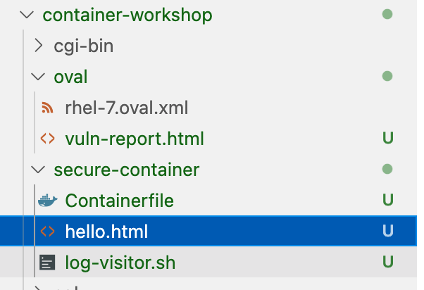
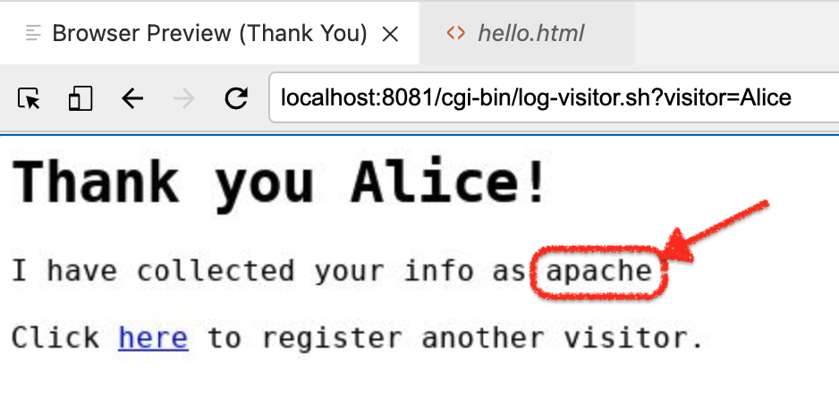

Build your own Secure Container
In this chapter we’ll try to make the container image we’ve been using a bit more secure using a related tool to podman, namely buildah.

buildah is used to create OCI-compliant container images, such as the quay.io/mhildenb/container-workshop-httpd that we’ve been using. We’ll start by fixing a the security vulnerability we found in the previous section.
Buildah native commands
One of the things that makes buildah unique is the ability to interact with container images from the host’s command line. (As we’ll see in the next section, it also allows the creation of images from a Dockerfile or, more generically a Containerfile). This will make it easy for us to remediate the vulnerability we found in the last section.
Where we left off with our container image is that we needed to patch the bash package installed on the container

This can be problematic if our image does not already have installed on it all the tools (such as package management tools like dnf or yum) necessary to remediate the problem. But with buildah’s native command functionality this is no longer a problem.
-
If you don’t have one open already, open a terminal as a non-root user and confirm your user by running the following command:
whoami%USER% -
Next, as a non-root user we need to do some setup that will allow buildah to interact with the container in this native command mode. Run the following in the terminal
The main reason for running this command is that we’ll be mounting filesystems inside the container and non-root users normally do not have privileges to do this. Running
buildah unshareis a way of preparing to work with containers "rootlessly" (if you will). For a discussion of what this is, see here. Think of it as a way that buildah can work with container "rootlessly" just as podman did in the last sectionbuildah unshare -
You should notice that upon running the command your terminal turns to look like a root terminal. You are not actually root, but rather working within a "namespace" that makes you appear as root when it comes to interacting with buildah’s containers
[root@ansible-1 ~]# -
Next we tell buildah to implicitly create a "working container" from our currently vulnerable image:
CONTAINER=$(buildah from quay.io/mhildenb/container-workshop-httpd) (1)1 We’re effectively assigning a the shell variable CONTAINERto the id of the buildah container that starts with the state of the image we want to updateIf you haven’t yet downloaded the image, the image might be downloaded first from the repo before you can enter the next command
-
To confirm that our working container is up, we can run the following command (which is a little like
podman psbut for "working containers")buildah containersCONTAINER ID BUILDER IMAGE ID IMAGE NAME CONTAINER NAME ef575a8a3408 * 60dde8abf76e quay.io/mhildenb/container-wo... container-workshop-httpd-working-container -
We can then use buildah to effectively mount the root of the container’s filesystem
CONTAINER_MOUNT_POINT=$(buildah mount ${CONTAINER}) \(1) && echo "Container ${CONTAINER}'s filesystem mounted on host at ${CONTAINER_MOUNT_POINT}"1 CONTAINER_MOUNT_POINT is getting set with the path to the mount in the host filesystem. We store it in a shell variable because this tends to be a long path Container container-workshop-httpd-working-container's filesystem mounted on host at /home/%USER%/.local/share/containers/storage/overlay/500abaa5921678c20f37f689ae72e37734445934e8c223775a2b71cce091e3f6/merged (1)1 The highlighted section will be different on your instance. This is just making clear where the container mount point is -
We can even peek inside the container image through the mount point
ls -l ${CONTAINER_MOUNT_POINT}total 0 lrwxrwxrwx. 1 root root 7 Apr 20 03:58 bin -> usr/bin dr-xr-xr-x. 2 root root 6 Dec 14 2017 boot drwxr-xr-x. 2 root root 6 Apr 20 03:58 dev drwxr-xr-x. 51 root root 19 May 30 08:29 etc drwxr-xr-x. 2 root root 6 Apr 20 04:00 home lrwxrwxrwx. 1 root root 7 Apr 20 03:58 lib -> usr/lib lrwxrwxrwx. 1 root root 9 Apr 20 03:58 lib64 -> usr/lib64 drwxr-xr-x. 2 root root 6 Dec 14 2017 media drwxr-xr-x. 2 root root 6 Dec 14 2017 mnt drwxr-xr-x. 2 root root 6 Dec 14 2017 opt drwxr-xr-x. 2 root root 6 Apr 20 03:58 proc dr-xr-x---. 4 root root 18 May 30 08:28 root drwxr-xr-x. 14 root root 18 May 30 08:29 run lrwxrwxrwx. 1 root root 8 Apr 20 03:58 sbin -> usr/sbin drwxr-xr-x. 2 root root 6 Dec 14 2017 srv drwxr-xr-x. 2 root root 6 Apr 20 03:58 sys drwxrwxrwt. 7 root root 46 May 30 08:29 tmp drwxr-xr-x. 13 root root 19 Apr 20 03:58 usr drwxr-xr-x. 19 root root 17 May 30 08:29 var -
Now that we have a mount point we can copy files from the host directly into the container. In our case however, we want to use the host’s package management tooling to install the updated bash package on the container {$CONTAINER}. Run this command:
dnf install -y \(1) --installroot=$CONTAINER_MOUNT_POINT \(2) bash (3)1 dnf is the package management tool installed on your host instance. The -ymeans that if dnf prompts the user, such as whether to install a given package, the answer will always be yes2 This tells dnf that the requested packages should be installed relative to this installroot (${CONTAINER_MOUNT_POINT} and thus the root of the container) instead of '/', the root of the host instance 3 We are telling dnf to install the latest available compatible version of bash for our container (i.e. at --installroot) -
You may see a few errors upon running this command. They are non-critical. In the output the key message you should see is
Package bash-4.2.45-2.el7.x86_64 is already installed. Dependencies resolved. =================================================================================================== Package Architecture Version Repository Size =================================================================================================== Upgrading: bash x86_64 4.2.46-34.el7 ubi-7 1.0 M Transaction Summary =================================================================================================== Upgrade 1 Package Total download size: 1.0 M Downloading Packages: bash-4.2.46-34.el7.x86_64.rpm 415 kB/s | 1.0 MB 00:02 --------------------------------------------------------------------------------------------------- Total 414 kB/s | 1.0 MB 00:02 Running transaction check Transaction check succeeded. Running transaction test Transaction test succeeded. Running transaction Preparing : 1/1 Upgrading : bash-4.2.46-34.el7.x86_64 1/2 Running scriptlet: bash-4.2.46-34.el7.x86_64 1/2 Cleanup : bash-4.2.45-2.el7.x86_64 2/2 Running scriptlet: bash-4.2.45-2.el7.x86_64 2/2 Verifying : bash-4.2.46-34.el7.x86_64 1/2 Verifying : bash-4.2.45-2.el7.x86_64 2/2 Installed products updated. Upgraded: bash-4.2.46-34.el7.x86_64 (1) Complete!1 Notice that this package is more recent than the minimum release needed to address the vulnerability -
Now we will commit these changes to a new image locally on the host that we’ll test. We commit the changes with
buildah commit \(1) ${CONTAINER} \(2) localhost/container-workshop-httpd-secure (3)1 commitmeans to take the working container and save it as a container image2 This is the ID of the working container that we want saved as an image 3 The name the image should be saved as. This saves the image to the user’s local container store on the host instance -
This should yield output like the following
Getting image source signatures Copying blob 123257361dae skipped: already exists Copying blob c9e02f9d3afe skipped: already exists Copying blob 86284899b0cc skipped: already exists Copying blob bcf3865bf7f7 skipped: already exists Copying blob 4e7c990a129f skipped: already exists Copying blob 210af8709b71 skipped: already exists Copying blob 47e96512450e skipped: already exists Copying blob 8f10e6ebff19 skipped: already exists Copying blob 486383b07939 skipped: already exists Copying blob 23be1053bf93 skipped: already exists Copying blob ee738432d587 skipped: already exists Copying blob bc71779d57e9 done Copying config 6b4a460f1e done Writing manifest to image destination Storing signatures 6b4a460f1e4077bd64b862fcdabe93928779e441ed3e84bb161e8cead079a3e0 -
Now we can leave the unshare environment to test out our container fix
exit
Testing commited container
Now that we committed a new image, we can test this committed image
-
Run the new container "rootlessly" in the terminal by running the following command:
podman run \ -d \ -p 8081:80/tcp \ --name my-web-server \ -v /home/%USER%/container-workshop:/var/log/www:Z \ localhost/container-workshop-httpd-secure -
Since our new container image is virtually identical to the original one (except for the new bash package) and we’re forwarding the same ports we can now attempt to exploit the container again with the configuration from before
-
If you don’t still have the metasploit console open, then split the terminal and follow the instructions here to the point where the metasploit console is configured to target the container
-
Next run the following command in the metasploit terminal
check -
And this should result in the following output
[*] 127.0.0.1:8081 - The target is not exploitable.Congratulations! You’d fixed the shellshock exploit
Buildah and Containerfiles
Though we’ve fixed the issue with quay.io/mhildenb/container-workshop-httpd:0.0.5 by using the buildah native command line tools to fix it, there are still other aspects of the container that could be addressed to make it more secure and less likely to need special privileges from the underlying operating system such as
-
Not running as the root user (and thus the apache server not running as
root) -
Not requiring a port < 1024. Currently the apache server in the container images listens on port 80
What’s more, we have no record of the step-by-step changes we’ve made to the container that we might store in revision control. One (valid) option would be to store all the buildah cli commands we issued in a shell script. However, container tools like docker have popularized the Dockerfile (or, more generically, Containerfile) way of defining new containers. Let’s investigate the quay.io/mhildenb/container-workshop-httpd:0.0.5’s Containerfile to see if we can address the points above
Basic Containerfile
-
To start, let’s create a folder where we’ll do the work of building our container. Right click on the
container-workshopfolder in the explorer, selectNew Folder. Name the new foldersecure-container

-
In a normal user terminal, change into this newly created directory
cd /home/%USER%/container-workshop/secure-container -
Next we’re going to create a new Containerfile. Right-click on the
secure-containerfolder and selectNew File.New Containerfile
-
The Containerfile you just created should appear in the editor window. We’ll be slowly adding to this Containfile bit by bit
-
Add the following lines to the containerfile
FROM registry.access.redhat.com/ubi7 (1) USER root (2)1 FROMis the base container that this container will start from.ubi7stands for "Universal Base Image". It will serve as a secure basis for the rest of our container. See more information on ubi below2 USERindicates that we want to operate as therootuser for all the commands that follow, until anotherUSERdirective is found -
To get a sense of what we’ve done, let’s build a container from this Containerfile useing
buildah. Run the following commandbuildah bud \(1) -f Containerfile \(2) -t localhost/secure-container \(3) /home/%USER%/container-workshop/secure-container (4)1 budindicates that buildah should operate from aContainerfile(orDockerfile)2 -findicates a the name of the Containerfile that should be used (in this instance, the one that just created)3 -tnames the tag that should be given to the resultant image4 The final parameter is the directory in which the command should be run -
You should see output something like this:
STEP 1: FROM registry.access.redhat.com/ubi7 Getting image source signatures Checking if image destination supports signatures Copying blob 93156a512b98 done Copying blob f8c518873786 done Copying config 67d3aabcdb done Writing manifest to image destination Storing signatures STEP 2: USER root STEP 3: COMMIT localhost/secure-container (1) Getting image source signatures Copying blob 01d2fb866535 skipped: already exists Copying blob 9e12a51e507a skipped: already exists Copying blob 5f70bf18a086 done Copying config 3d4cd1585c done Writing manifest to image destination Storing signatures --> 3d4cd1585cd 3d4cd1585cd258b57399e3cd74516bca85ea745a1066e6ff26e1ee170122d2321 Notice that the COMMITcommand is implicit and reminiscent of the buildah native command that we issued -
Let’s take a look inside the container we’ve just created and check to see if we need to address the bash vulnerability
podman run \ -it \ localhost/secure-container \ bash (1)1 This argument, always on the other side of the container image to run, represents the command that should be run in the container. When this command exits, the container will exit. Normally containers have a default command, but we haven’t configured that (yet, see later in the lab). For now we’re telling the container to run bashas the sustaining or "root" process of the container[root@0c388bc22ff6 /]# -
Let’s take a look at the version of
bashthat’s runningLoaded plugins: ovl, product-id, search-disabled-repos, subscription-manager This system is not receiving updates. You can use subscription-manager on the host to register and assign subscriptions. ubi-7 | 3.8 kB 00:00:00 ubi-7-rhah | 3.7 kB 00:00:00 ubi-7-server-extras-rpms | 3.7 kB 00:00:00 ubi-7-server-optional-rpms | 3.8 kB 00:00:00 ubi-server-rhscl-7-rpms | 3.8 kB 00:00:00 (1/15): ubi-7/x86_64/updateinfo | 92 B 00:00:00 (2/15): ubi-7/x86_64/primary_db | 800 kB 00:00:00 (3/15): ubi-7-rhah/x86_64/updateinfo | 92 B 00:00:00 (4/15): ubi-7-rhah/x86_64/primary_db | 2.5 kB 00:00:00 (5/15): ubi-7-server-extras-rpms/x86_64/updateinfo | 92 B 00:00:00 (6/15): ubi-7-server-extras-rpms/x86_64/primary_db | 6.8 kB 00:00:00 (7/15): ubi-7-server-optional-rpms/x86_64/updateinfo | 92 B 00:00:00 (8/15): ubi-7-server-optional-rpms/x86_64/primary_db | 14 kB 00:00:00 (9/15): ubi-7/x86_64/group | 124 B 00:00:01 (10/15): ubi-server-rhscl-7-rpms/x86_64/updateinfo | 92 B 00:00:00 (11/15): ubi-server-rhscl-7-rpms/x86_64/primary_db | 396 kB 00:00:00 (12/15): ubi-7-rhah/x86_64/group | 124 B 00:00:00 (13/15): ubi-7-server-extras-rpms/x86_64/group | 124 B 00:00:00 (14/15): ubi-server-rhscl-7-rpms/x86_64/group | 124 B 00:00:00 (15/15): ubi-7-server-optional-rpms/x86_64/group | 124 B 00:00:01 Installed Packages Name : bash Arch : x86_64 Version : 4.2.46 Release : 34.el7 Size : 3.5 M Repo : installed From repo : anaconda Summary : The GNU Bourne Again shell URL : http://www.gnu.org/software/bash License : GPLv3+ Description : The GNU Bourne Again shell (Bash) is a shell or command language : interpreter that is compatible with the Bourne shell (sh). Bash : incorporates useful features from the Korn shell (ksh) and the C shell : (csh). Most sh scripts can be run by bash without modification. -
Notice that the version (highlighted), is the same version that we installed using the buildah command line here
Why didn’t we have to patch bashWhile Shellshock is by now an old CVE, this demonstrates more broadly the value of starting your container with one of Red Hat’s Universal Base Images. These images are updated every quarter, their internal packages patched by Red Hat to fix all known CVEs. For more in depth information on the UBI program see here
Running Commands in a Containerfile
Our image is a good start, but it doesn’t yet have a webserver on it; this is something we’re going to have to install. As we’ve seen, the ubi base has yum installed in it. So instead of using buildah native commands we can instead add directives to the Containerfile to RUN commands within the Container as it’s being built.
-
If you are still in the container, exit it to get back to the %USER% terminal on the host instance
-
From the IDE, add the highlighted lines to the Containerfile
FROM registry.access.redhat.com/ubi7 USER root RUN yum install -y httpd && yum update -y && yum clean all (1)1 The RUNdirective allows us to run a command as the user currently selected by theUSERdirective. In this instance we chain a bunch of yum commands together to install our httpd server, ensure that all our packages are up to date (there may have been CVE patches since the last publishing of the ubi base image), and cleanup any temporary files (as we don’t want these bloating the size of our final image) -
Now from the terminal run the following command to build our container
buildah bud \ -f Containerfile \ -t localhost/secure-container \ /home/%USER%/container-workshop/secure-container -
This should yield output similar[1] to the following:
STEP 1: FROM registry.access.redhat.com/ubi7 STEP 2: USER root STEP 3: RUN yum install -y httpd && yum update -y && yum clean all Loaded plugins: ovl, product-id, search-disabled-repos, subscription-manager This system is not receiving updates. You can use subscription-manager on the host to register and assign subscriptions. Resolving Dependencies --> Running transaction check ---> Package httpd.x86_64 0:2.4.6-97.el7_9 will be installed --> Processing Dependency: httpd-tools = 2.4.6-97.el7_9 for package: httpd-2.4.6-97.el7_9.x86_64 --> Processing Dependency: system-logos >= 7.92.1-1 for package: httpd-2.4.6-97.el7_9.x86_64 --> Processing Dependency: /etc/mime.types for package: httpd-2.4.6-97.el7_9.x86_64 --> Processing Dependency: libapr-1.so.0()(64bit) for package: httpd-2.4.6-97.el7_9.x86_64 --> Processing Dependency: libaprutil-1.so.0()(64bit) for package: httpd-2.4.6-97.el7_9.x86_64 --> Running transaction check ---> Package apr.x86_64 0:1.4.8-7.el7 will be installed ---> Package apr-util.x86_64 0:1.5.2-6.el7 will be installed ---> Package httpd-tools.x86_64 0:2.4.6-97.el7_9 will be installed ---> Package mailcap.noarch 0:2.1.41-2.el7 will be installed ---> Package redhat-logos.noarch 0:70.7.0-1.el7 will be installed --> Finished Dependency Resolution Dependencies Resolved ================================================================================ Package Arch Version Repository Size ================================================================================ Installing: httpd x86_64 2.4.6-97.el7_9 ubi-7 1.2 M Installing for dependencies: apr x86_64 1.4.8-7.el7 ubi-7 104 k apr-util x86_64 1.5.2-6.el7 ubi-7 92 k httpd-tools x86_64 2.4.6-97.el7_9 ubi-7 93 k mailcap noarch 2.1.41-2.el7 ubi-7 31 k redhat-logos noarch 70.7.0-1.el7 ubi-7 13 M Transaction Summary ================================================================================ Install 1 Package (+5 Dependent packages) Total download size: 15 M Installed size: 18 M Downloading packages: warning: /var/cache/yum/x86_64/7Server/ubi-7/packages/apr-1.4.8-7.el7.x86_64.rpm: Header V3 RSA/SHA256 Signature, key ID fd431d51: NOKEY Public key for apr-1.4.8-7.el7.x86_64.rpm is not installed -------------------------------------------------------------------------------- Total 4.2 MB/s | 15 MB 00:03 Retrieving key from file:///etc/pki/rpm-gpg/RPM-GPG-KEY-redhat-release Importing GPG key 0xFD431D51: Userid : "Red Hat, Inc. (release key 2) <security@redhat.com>" Fingerprint: 567e 347a d004 4ade 55ba 8a5f 199e 2f91 fd43 1d51 Package : redhat-release-server-7.9-6.el7_9.x86_64 (@anaconda/7.9) From : /etc/pki/rpm-gpg/RPM-GPG-KEY-redhat-release Importing GPG key 0x2FA658E0: Userid : "Red Hat, Inc. (auxiliary key) <security@redhat.com>" Fingerprint: 43a6 e49c 4a38 f4be 9abf 2a53 4568 9c88 2fa6 58e0 Package : redhat-release-server-7.9-6.el7_9.x86_64 (@anaconda/7.9) From : /etc/pki/rpm-gpg/RPM-GPG-KEY-redhat-release Running transaction check Running transaction test Transaction test succeeded Running transaction Installing : apr-1.4.8-7.el7.x86_64 1/6 Installing : apr-util-1.5.2-6.el7.x86_64 2/6 Installing : httpd-tools-2.4.6-97.el7_9.x86_64 3/6 Installing : redhat-logos-70.7.0-1.el7.noarch 4/6 Installing : mailcap-2.1.41-2.el7.noarch 5/6 Installing : httpd-2.4.6-97.el7_9.x86_64 6/6 Verifying : httpd-tools-2.4.6-97.el7_9.x86_64 1/6 Verifying : mailcap-2.1.41-2.el7.noarch 2/6 Verifying : apr-1.4.8-7.el7.x86_64 3/6 Verifying : apr-util-1.5.2-6.el7.x86_64 4/6 Verifying : httpd-2.4.6-97.el7_9.x86_64 5/6 Verifying : redhat-logos-70.7.0-1.el7.noarch 6/6 Installed: httpd.x86_64 0:2.4.6-97.el7_9 Dependency Installed: apr.x86_64 0:1.4.8-7.el7 apr-util.x86_64 0:1.5.2-6.el7 httpd-tools.x86_64 0:2.4.6-97.el7_9 mailcap.noarch 0:2.1.41-2.el7 redhat-logos.noarch 0:70.7.0-1.el7 Complete! Loaded plugins: ovl, product-id, search-disabled-repos, subscription-manager This system is not receiving updates. You can use subscription-manager on the host to register and assign subscriptions. No packages marked for update Loaded plugins: ovl, product-id, search-disabled-repos, subscription-manager This system is not receiving updates. You can use subscription-manager on the host to register and assign subscriptions. Cleaning repos: ubi-7 ubi-7-rhah ubi-7-server-extras-rpms : ubi-7-server-optional-rpms ubi-server-rhscl-7-rpms STEP 4: COMMIT localhost/secure-container Getting image source signatures Copying blob 01d2fb866535 skipped: already exists Copying blob 9e12a51e507a skipped: already exists Copying blob 2c4e14cad8b6 done Copying config 7ca1aec798 done Writing manifest to image destination Storing signatures --> 7ca1aec798c 7ca1aec798cefd27597d423beb41087afd112c5915d1cdea34269a46665866f9 -
Let’s see if this image has a webserver running now. Run the following command in the terminal
podman run \ -d \ -p 8081:80/tcp \ --name my-web-server \ localhost/secure-container \ /usr/sbin/httpd -DFOREGROUND (1)1 As we did above with bash, we are now wanting to runhttpdas the root process of localhost/secure-container and this time we’re providing that command the-DFOREGROUNDargument -
Open you’re Browser Preview window and navigate to
localhost:8081and you should see a familiar sight (or site, if you will)
-
This is encouraging, but we don’t yet have the non-boilerplate aspects of our site in the container. For instance, if we navigate to our rudimentary guestbook functionality at
localhost:8081/hello.html Figure 2. Guestbook functionality does not exist in the container
Figure 2. Guestbook functionality does not exist in the container -
We’ll address this problem in the next section. For now, let’s stop and remove this container by running the following
podman rm -f my-web-server
Copying files into the container
So we’re got a container image that is able to run a generic apache site, but how do we customize this to run our specific site. This is where another Container file directive, COPY comes in. In this section we’re going to get a little help from the builah native commands to retrieve our custom content. Then we’re going to show how we can use COPY and the Containerfile to get those assets onto our container
-
First let’s leverage
buildahto pull our custom website files onto our host. We’ll need to mount the container and since we’re not a root user we’re going to first need to issuebuildah unshare[root@ansible-1 ~]# -
Next we’ll run the next few commands to mount the old insecure container
Normally a team would already have custom content handy on the host already. In this instance we’re wanting to show off
buildaha little more but it is a reasonably typical practice to copy files from one container image to another, particularly in build scenarios where assets are built in one container and copied to another. This use case is out of the scope of this workshop however.WORKING_CONTAINER_OLD=$(buildah from quay.io/mhildenb/container-workshop-httpd) WORKING_CONTAINER_OLD_IMAGE_MOUNT=$(buildah mount ${WORKING_CONTAINER_OLD}) -
Now we don’t want very many files from the old container, we only want the files involved with guestbook. We can pull them out and into our
Containerfileworking directory by running the following commandscp ${WORKING_CONTAINER_OLD_IMAGE_MOUNT}/var/www/cgi-bin/log-visitor.sh /home/%USER%/container-workshop/secure-container cp ${WORKING_CONTAINER_OLD_IMAGE_MOUNT}/var/www/html/hello.html /home/%USER%/container-workshop/secure-container -
At this point you should see the two files appear in the
secure-containerdirectory. You can also click on them and take a look at the (simple) HTML and bash code -
Now that we’ve retrieved the files, we can exit the
buildah unsharesesssionexit[%USER%@ansible-1 ~]$ -
Next, open the
Containerfilein the IDE (if it’s not open already) and add the highlighted linesFROM registry.access.redhat.com/ubi7 USER root RUN yum install -y httpd && yum update -y && yum clean all COPY hello.html /var/www/html (1) COPY log-visitor.sh /var/www/cgi-bin RUN chmod 755 /var/www/cgi-bin/log-visitor.sh (2)1 The COPYdirective moves files from the current working directory on the host and copies them to the specified location in the container image (in this case/var/www/html). This is analogous to what we did before with thebuildah mountcommands2 To ensure our cgi-bin script has execute privileges it’s generally good practice to use a RUNdirective to use thechmodcommand to ensure this. -
Rebuild the container with the
buildah budcommand again:buildah bud \ -f Containerfile \ -t localhost/secure-container \ /home/%USER%/container-workshop/secure-container -
This should yield output similar to before but appended with the following (… represents content that has been omitted)
STEP 1: FROM registry.access.redhat.com/ubi7 ... STEP 4: COPY hello.html /var/www/html STEP 5: COPY log-visitor.sh /var/www/cgi-bin STEP 6: RUN chmod 755 /var/www/cgi-bin/log-visitor.sh STEP 7: COMMIT localhost/secure-container Getting image source signatures Copying blob 01d2fb866535 skipped: already exists Copying blob 9e12a51e507a skipped: already exists Copying blob e7b33fa87b36 done Copying config ddbfdfbd09 done Writing manifest to image destination Storing signatures --> ddbfdfbd096 ddbfdfbd0960f0db36cf608e4066d9c26fb4f87f62c2d3cdb7203ea379213cbd -
Now let’s see if this is enough to run our site
podman run \ -d \ -p 8081:80/tcp \ --name my-web-server \ localhost/secure-container \ /usr/sbin/httpd -DFOREGROUND -
Once the container is running, if you navigate to
localhost:8081/hello.htmlyou should now see the guestbook Figure 3. Guestbook restored
Figure 3. Guestbook restored -
Go ahead and "sign" the guestbook by entering your name (such as Alice) and hit
Submit. You should be greeted with a page like this -
Of note is that this time the httpd server is running as the
apacheuser and notroot(see highlight in image)Why is the webserver running asapache?Given that our
Containerfileis running asroot(per the lastUSERdirective) you might be wondering why the webserver is running asapache. This is because the httpd package that is installed fromyumdefaults to running as apache, regardless of the user that executes the/usr/sbin/httpdcommand
At this point our container image is looking pretty good. Aside from the volume mount (so that our guestbook can be persisted between runs) things are looking pretty good. However, there are still additional steps we take to make this image even more resilient to attack or exploit. Here are two issues:
-
The web server is running on port 80 in the container. This is a privileged port. Better to have this run at port run in an privileged port above 1024 (such as 8080)
-
Running as a specific user can be problematic as that user can implicitly have privileges afforded to them via sudo (either at runtime or in the ongoing maintenance of the container). It would be better if we could run the container as the unknown or "anonymous" user
We’ll address both of these concerns in the next section. For now, as before, let’s stop and remove this container by running the following
podman rm -f my-web-serverRunning as an "Arbitrary User"
To futher limit the attack surface of containers, Kubernetes products such as OpenShift by default run containers with an arbitrarily assigned user. This effectively overrides the USER directive of the Containerfile. Explanation and reasons for this can be found here.
When a container is run with an arbitrary user, the only thing that we are guaranteed is that the user will be part of the root group. This fact will become important in a minute. First let’s take a look at what happens to the container when we run as a random user and fix the issues in the Containerfile as they arise
-
We can already run our container image with an arbitrary user using the
-uflag withpodman run. Let’s attempt to run our container (but this time without the-dflag so that we can see the output right away)podman run \ --rm \ -u $((1000 + ${RANDOM})) \(1) -p 8081:80/tcp \ --name my-web-server \ localhost/secure-container \ /usr/sbin/httpd -DFOREGROUND1 -uallows us to override the user the container should be run as. In this case we’re using${RANDOM}[2] offset by 1000 (to prevent collisions with existing users in the container) -
You’ll notice that it fails with this error message
AH00558: httpd: Could not reliably determine the server's fully qualified domain name, using 10.0.2.100. Set the 'ServerName' directive globally to suppress this message (13)Permission denied: AH00058: Error retrieving pid file /run/httpd/httpd.pid AH00059: Remove it before continuing if it is corrupted.
The issue here is that by default an arbitrary user won’t have access to most of the files that the webserver needs to run. This is where the fact that our arbitrary user will always be part of the root group (gid: 0) will come in handy. We need to make sure that the root group is assigned to the files and folders that the webserver needs and that the group has appropriate permissions.
The process for doing this might be one of trial and error if you’re not familiar with the software that you’re attempting to run in the container. In this case we know exactly which directories need to be adjusted. Let’s return to the Containerfile
-
Open the
Containerfileand add the following lines (highlighted) to itFROM registry.access.redhat.com/ubi7 USER root RUN yum install -y httpd && yum update -y && yum clean all COPY hello.html /var/www/html COPY log-visitor.sh /var/www/cgi-bin RUN chmod 755 /var/www/cgi-bin/log-visitor.sh RUN chown -R 1001:0 /run/httpd && chmod -R g=u /run/httpd RUN chown -R 1001:0 /var/log/httpd/ && chmod -R g=u /var/log/httpd/ USER 1001 -
Rebuild the container with the
buildah budcommand again:buildah bud \ -f Containerfile \ -t localhost/secure-container \ /home/%USER%/container-workshop/secure-container -
This should yield output similar to before but appended with the following (… represents content that has been omitted)
STEP 1: FROM registry.access.redhat.com/ubi7 ... STEP 6: RUN chmod 755 /var/www/cgi-bin/log-visitor.sh STEP 7: RUN chown -R 1001:0 /run/httpd && chmod -R g=u /run/httpd STEP 8: RUN chown -R 1001:0 /var/log/httpd/ && chmod -R g=u /var/log/httpd/ STEP 9: USER 1001 STEP 10: COMMIT localhost/secure-container Getting image source signatures Copying blob 01d2fb866535 skipped: already exists Copying blob 9e12a51e507a skipped: already exists Copying blob ecd87ecc84d1 done Copying config 8f4119c775 done Writing manifest to image destination Storing signatures --> 8f4119c7756 8f4119c7756aba7d105ecf07adb5d7fc24d4d1240de0071875d5c6528fa3c636 -
Now let’s try running the container again
Even through we’ve set a default user in the container, let’s still run with an arbitrary one to test that aspect of the container
podman run \ --rm \ -u $((1000 + ${RANDOM})) \ -p 8081:80/tcp \ --name my-web-server \ localhost/secure-container \ /usr/sbin/httpd -DFOREGROUND -
Which shows some progress but highlights a new issue:
AH00558: httpd: Could not reliably determine the server's fully qualified domain name, using 10.0.2.100. Set the 'ServerName' directive globally to suppress this message (13)Permission denied: AH00072: make_sock: could not bind to address [::]:80 (13)Permission denied: AH00072: make_sock: could not bind to address 0.0.0.0:80 no listening sockets available, shutting down AH00015: Unable to open logs
So the issue here is something that we assumed we would need to change, namely, that the webserver is attempting to bind to a privileged port. Since we’re no longer running the command as root this is not possible. This highlights another issue that you might run into trying to support arbitrary containers in your containers: you might need to change the configuration of the service that you’re attempting to containerize.
For our apache webserver we’re going to need to change its default configuration file. Normally this is done by having our configuration on the host, editing it to our liking there, and using the COPY directive to replace the default configuration in the container.
-
First let’s use buildah’s native commands to pull the
httpd.conffile out of our image and into our working folder. Run the following command in the terminal:buildah unshare WORKING_CONTAINER=$(buildah from localhost/secure-container) WORKING_CONTAINER_MOUNT=$(buildah mount ${WORKING_CONTAINER}) cp ${WORKING_CONTAINER_MOUNT}/etc/httpd/conf/httpd.conf /home/%USER%/container-workshop/secure-container exit -
When the commands finish you should have a copy of the httpd.conf from the image in the
container-workshopdirectory (you might need to refresh the explorer first). Click on the httpd.conf to edit it in VSCode
-
Find the
Listendirective near the start of thehttpd.confand change it to match the highlighted line so that the server listens on port 8080# ServerRoot "/etc/httpd" # # Listen: Allows you to bind Apache to specific IP addresses and/or # ports, instead of the default. See also the <VirtualHost> # directive. # # Change this to Listen on specific IP addresses as shown below to # prevent Apache from glomming onto all bound IP addresses. # # Listen 12.34.56.78:80 Listen 8080 # # Dynamic Shared Object (DSO) Support # -
OPTIONAL: Given that our server will not be started by the root user, there is no need to define a user and group the server should run as. Remove (or comment out) the lines that are struckthrough in your
httpd.conf# # If you wish httpd to run as a different user or group, you must run # httpd as root initially and it will switch. # # User/Group: The name (or #number) of the user/group to run httpd as. # It is usually good practice to create a dedicated user and group for # running httpd, as with most system services. # User apache Group apache # 'Main' server configuration
-
Now with the configuration updated, we need to once again update our
Containerfilewith the highlighted linesFROM registry.access.redhat.com/ubi7 USER root RUN yum install -y httpd && yum update -y && yum clean all COPY hello.html /var/www/html COPY log-visitor.sh /var/www/cgi-bin COPY httpd.conf /etc/httpd/conf/httpd.conf RUN chmod 755 /var/www/cgi-bin/log-visitor.sh RUN chown -R 1001:0 /run/httpd && chmod -R g=u /run/httpd RUN chown -R 1001:0 /var/log/httpd/ && chmod -R g=u /var/log/httpd/ USER 1001 -
Build the container
buildah bud \ -f Containerfile \ -t localhost/secure-container \ /home/%USER%/container-workshop/secure-container -
This should yield output similar to before but appended with the following (… represents content that has been omitted)
STEP 1: FROM registry.access.redhat.com/ubi7 ... STEP 6: RUN chmod 755 /var/www/cgi-bin/log-visitor.sh STEP 7: RUN chown -R 1001:0 /run/httpd && chmod -R g=u /run/httpd STEP 8: RUN chown -R 1001:0 /var/log/httpd/ && chmod -R g=u /var/log/httpd/ STEP 9: USER 1001 STEP 10: COMMIT localhost/secure-container Getting image source signatures Copying blob 01d2fb866535 skipped: already exists Copying blob 9e12a51e507a skipped: already exists Copying blob ecd87ecc84d1 done Copying config 8f4119c775 done Writing manifest to image destination Storing signatures --> 8f4119c7756 8f4119c7756aba7d105ecf07adb5d7fc24d4d1240de0071875d5c6528fa3c636 -
Run the container (in the foreground) again to test it
podman run \ --rm \ -u $((1000 + ${RANDOM})) \ -p 8081:8080/tcp \(1) --name my-web-server \ localhost/secure-container \ /usr/sbin/httpd -DFOREGROUND1 Notice that we’ve had to change the port that we’re forwarding to as our webserver should now bind to port 8080 in the container -
Next navigate to
http://localhost:8081/hello.html, enter a name (such as "Alice") into the guestbook and hit submit. You should see the following page Figure 4. Notice the random uid (yours will vary)
Figure 4. Notice the random uid (yours will vary)
Additional Containerfile Commands
Our container is in pretty good shape, but it’s a little annoying that we have to specify a command every time, for instance, what’s highlighted here:
podman run \
--rm \
-u $((1000 + ${RANDOM})) \
-p 8081:8080/tcp \(1)
--name my-web-server \
localhost/secure-container \
/usr/sbin/httpd -DFOREGROUNDFor this we can add a directive to our Containerfile called CMD which tells the container runtime which command should be executed to start the container[3]
The other thing that would be good to advertise is the port that the container listens on at runtime (now 8080). There is a directive for this as well called EXPOSE. This does not actually publish the port but rather serves as documentation between the person who builds the image and those that run it (or, as we’ll see, a container orchestration platform such as Kubernetes)
-
Let’s finish off our container by adding the following highlighted lines to our
Containerfile:FROM registry.access.redhat.com/ubi7 USER root RUN yum install -y httpd && yum update -y && yum clean all COPY hello.html /var/www/html COPY log-visitor.sh /var/www/cgi-bin COPY httpd.conf /etc/httpd/conf/httpd.conf RUN chmod 755 /var/www/cgi-bin/log-visitor.sh RUN chown -R 1001:0 /run/httpd && chmod -R g=u /run/httpd RUN chown -R 1001:0 /var/log/httpd/ && chmod -R g=u /var/log/httpd/ EXPOSE 8080/tcp (1) USER 1001 CMD /usr/sbin/httpd -DFOREGROUND (2)1 as with port forwarding in podman runwe can specify the protocol (tcp)2 This is the same command we were running manually with podman run -
Build the container
buildah bud \ -f Containerfile \ -t localhost/secure-container \ /home/%USER%/container-workshop/secure-container -
This should yield output similar to before but appended with the following (… represents content that has been omitted)
STEP 1: FROM registry.access.redhat.com/ubi7 ... STEP 9: RUN chown -R 1001:0 /var/log/httpd/ && chmod -R g=u /var/log/httpd/ STEP 10: EXPOSE 8080/tcp STEP 11: USER 1001 STEP 12: CMD /usr/sbin/httpd -DFOREGROUND STEP 13: COMMIT localhost/secure-container Getting image source signatures Copying blob 01d2fb866535 skipped: already exists Copying blob 9e12a51e507a skipped: already exists Copying blob 03c598179387 done Copying config 8d4a377b07 done Writing manifest to image destination Storing signatures --> 8d4a377b076 8d4a377b0765f588561fa9f842a6c19459431c4f360bf0baac2d8a623983a5f5 -
Run the container again to test it (notice the differences in the command)
podman run \ --rm \ -d \ -P \(1) --name my-web-server \ localhost/secure-container1 the -Pflag leverages theEXPOSEdirectives from theContainerfileand forwards all exposed ports to random ports on the host -
You’ll notice that we can no longer hit the webserver at port 8081 (or it’s at least very unlikely that we can) and instead we need to find out the port that podman assigned on the host. Capture that with this command:
HOST_PORT=$(podman ps \(1) -f name=my-web-server \(2) --format json | jq -r ".[0].Ports[0].hostPort") (3)1 The output of this string of commands will give us the port on the host that is forwarded to our exposed container port 2 This returns only information for containers with the name my-web-server3 --formatreturns extended information in JSON format which we pipe to thejqcommand to quickly parse the JSON for the field we’re after -
Next, we’re pretty-print the url of our guestbook so that we can paste it into our Browser Preview window
echo "http://localhost:${HOST_PORT}/hello.html" -
Copy the echo’ed string into the Browser Preview window
If you hover over the string in the terminal window with your mouse you might be prompted to CTRL-click (or CMD-click on Mac OSX) to open the link in your browser. This will not work because it will open the URL in your browser instead of in the Browser Preview of your VSCode host instance.

-
You should now see your guestbook
 Figure 5. Guestbook, but now at an arbitrary port
Figure 5. Guestbook, but now at an arbitrary port
Congratulations! You’ve build a secure container from the ground up. Next let’s look at some different ways of orchestrating and deploying containers